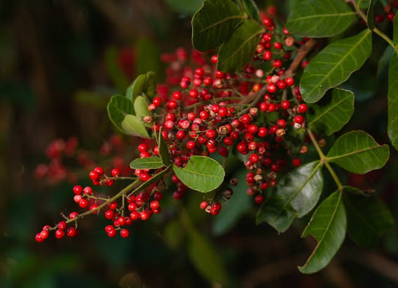

Aroeira-da-praia
Schinus terebinthifolia Raddi
Costa brasileira e restingas
Árvore de pequeno a médio porte
Atrai aves e polinizadores
Possui frutos avermelhados conhecidos como pimenta-rosa. É importante para a alimentação da fauna e para a restauração de áreas degradadas.
Descrição e características: Árvore de copa arredondada, folhas compostas e pequenas flores claras.
Locais de ocorrência: Costa brasileira e diferentes formações vegetais, principalmente em solos arenosos.
Aspectos ecológicos: Seus frutos alimentam aves e suas flores atraem abelhas e outros polinizadores.
Por que preservar? Ajuda na recuperação da vegetação nativa e na criação de condições favoráveis para a fauna.